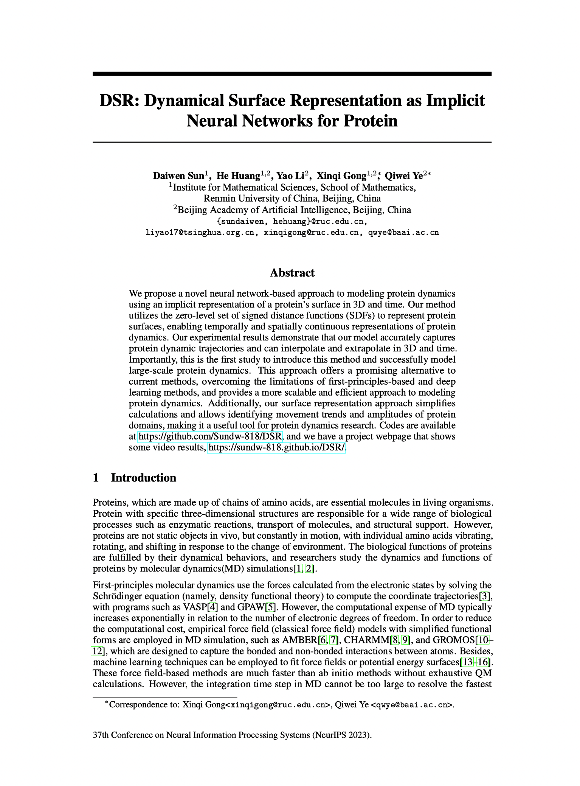

|
1 Renmin University of China 2 Beijing Academy of Artificial Intelligence
|
|
Overview of Our DSR.
|
We propose a novel approach to modeling protein dynamics using an implicit neural representation model of protein surface in 3D + time domain. Our method utilizes the zero-level set of signed distance functions (SDFs) to represent protein surfaces, enabling temporally and spatially continuous representations of protein dynamics. Our experimental results demonstrate that our model accurately represents protein dynamic trajectories, and has the ability to interpolate and extrapolate in 3D + time domain. Importantly, our study is the first to introduce this method and the first to successfully model large protein dynamics. This approach offers a promising alternative to current methods, overcoming the limitations of first-principles-based and deep learning methods, and provides a more scalable and efficient approach to modeling protein dynamics. Additionally, our surface representation approach simplifies calculations and allows for the identification of movement trends and amplitudes of protein domains, making it a valuable tool for protein dynamics research.
|  |
Daiwen Sun; He Huang; Yao Li; Xinqi Gong; Qiwei Ye
DSR: Dynamical Surface Representation as Implicit Neural Networks for Protein NeurIPS 2023 To be published [GitHub] [Project] |
Here we show some videos of predicted samples, which are ground truth, prediction, comparision of ground truth and prediction. In the comparison, the gray is ground truth and the purple is prediction.
Acknowledgements
Qiwei Ye and Xinqi Gong are the corresponding authors. This work was supported by Beijing Academy of Artificial Intelligence and Mathematical Intelligence Application Laboratory, MIALAB, Institute for Mathematical Sciences, Renmin University of China.
The website is modified from this template.
|